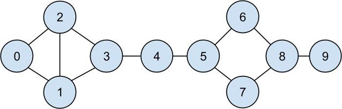
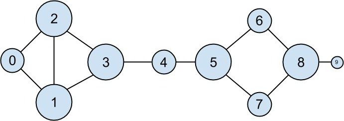
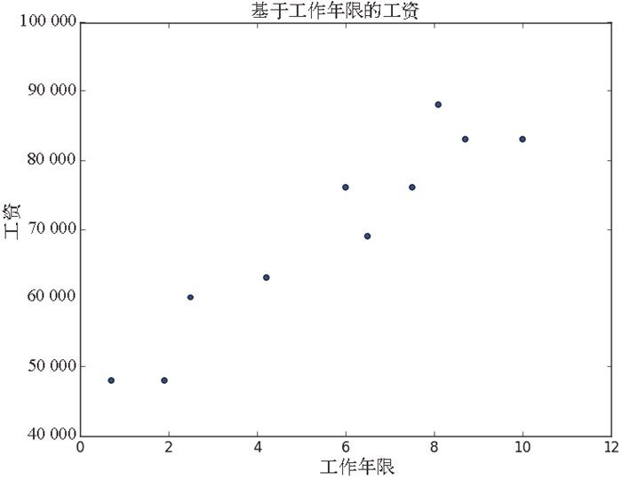

1.3 激励假设：DataSciencester
恭喜！你被聘请来领导 DataSciencester 的数据科学工作。DataSciencester 是数据科学家们的社交网络。
虽然号称为 数据科学家服务，DataSciencester 却从未践行数据科学任务（同样也从未构建自己的产品）。当然，这是你的工作。在本书中，我们通过解决在工作中碰到的一个个问题，来学习数据科学的思想。我们有时会直接研究用户提供的数据，有时会研究用户与网站互动生成的数据，有时研究从我们自己设计的实验中获得的数据。
DataSciencester 拥有一种特别强烈的原创精神——“非我莫属”（Not-Invented-Here，NIH），即工作中使用到的工具必须自己亲手创建。这样完成工作之后，你会全面深入地理解数据科学。将来，你更可以将自己所学运用于更有前途的公司，或去解决任何有趣的问题。
欢迎加入，祝你好运！（周五可以穿牛仔裤上班，洗手间位于大厅右侧。）
1.3.1 寻找关键联系人
现在，你在 DataSciencester 开始第一天的工作。网络部的副总一直有一些关于客户的问题没有解决，以前找不到人帮忙，现在你来了，他特别高兴。
第一，他需要你识别出数据科学家中的“关键联系人”。因而他转给你 DataSciencester 所有用户的网络关系数据。（实际工作中，你需要的数据不会轻而易举地拿过来。我们在第 9 章专门讨论获取数据的方法。）
从整体上看，数据是一个包含所有用户的列表。列表的每个元素是一个字典（即一个 dict ）。字典中包含了用户的 ID（即 id ）和账号名（即 name 。在这批数据中，name 与 id 的数字为谐音）：
users = [
{ "id": 0, "name": "Hero" },
{ "id": 1, "name": "Dunn" },
{ "id": 2, "name": "Sue" },
{ "id": 3, "name": "Chi" },
{ "id": 4, "name": "Thor" },
{ "id": 5, "name": "Clive" },
{ "id": 6, "name": "Hicks" },
{ "id": 7, "name": "Devin" },
{ "id": 8, "name": "Kate" },
{ "id": 9, "name": "Klein" }
]
同时，他也给了你用户的“友邻关系”数据列表。这个列表的元素是成对的 id ：
friendships = [(0, 1), (0, 2), (1, 2), (1, 3), (2, 3), (3, 4), (4, 5), (5, 6), (5, 7), (6, 8), (7, 8), (8, 9)]
比如说，元组 (0, 1) 表示 id 为 0 的数据科学家 Hero 和 id 为 1 的数据科学家 Dunn 是朋友。这种网络关系可以用图 1-1 来描述。

图 1-1：DataSciencester 网络
我们使用字典结构 dict 表示用户，因而可以方便地添加更多数据。
目前不要纠结代码细节，我们会在第 2 章指导你快速学习 Python。现在你只需要大致了解代码的功能。
比如，如果我们希望对每个用户增加一个朋友列表，首先需要对每个用户创建一个空列表：
for user in users:
user["friends"] = []
再用 friendships 数据填充：
for i, j in friendships:
# 这能起作用是因为users[i]是id为i的用户
users[i]["friends"].append(users[j]) # 把i加为j的朋友
users[j]["friends"].append(users[i]) # 把j加为i的朋友
完成之后，每个用户的 dict 都会包含一个朋友列表，进而可以深入地研究朋友网络关系，比如提问“平均的联系数是多少”（即每位用户平均拥有几位朋友）。
首先计算出全部 的联系数，这需要对所有用户的 friends 列表的长度求和：
def number_of_friends(user):
"""how many friends does _user_have?"""
return len(user["friends"]) # 列表friend_ids的长度
total_connections = sum(number_of_friends(user)
for user in users) # 24
然后，将它除以用户个数：
from __future__ import division # 整数除法需要导入
num_users = len(users) # 列表users的长度
avg_connections = total_connections / num_users # 2.4
这样就很容易看出，拥有最多联系的人就是拥有最多朋友数目的人。
因为用户不多，所以能很方便地按照朋友数的多少排序：
# 创建一个列表(user_id, number_of_friends)
num_friends_by_id = [(user["id"], number_of_friends(user))
for user in users]
sorted(num_friends_by_id, # 把它按照
key=lambda (user_id, num_friends): num_friends, # num_friends
reverse=True) # 从最大到最小排序
# 每一对都是(user_id, num_friends)
# [(1, 3), (2, 3), (3, 3), (5, 3), (8, 3),
# (0, 2), (4, 2), (6, 2), (7, 2), (9, 1)]
可将以上行为视为一种识别谁处在人际网络中心的方法。事实上，以上计算的是度中心性 ，是一种网络度量，如图 1-2 所示。

图 1-2：利用度计算 DataSciencester 的网络大小
度中心性简单易算，但不能总如你所愿。比如，在 DataSciencester 的网络中，Thor（id 为 4）只有两个联系数，Dunn（id 为 1）有三个。从网络关系图中看，直观上感觉 Thor 处于中心地位。第 21 章将考察网络关系的更多细节，探讨更多关于中心性的复杂概念，它们可能与直觉一致，也可能不一致。
1.3.2 你可能知道的数据科学家
当你正在填写新员工入职表格时，人力部门的副总来到你桌旁。她想鼓励数据科学家们多多联系，因而希望你设计一个“你可能知道的数据科学家”的提示函数。
你的直觉是用户可能会认识朋友的朋友。这不难计算：对某个用户，依次计算每个朋友的朋友，最后合并结果：
def friends_of_friend_ids_bad(user):
# foaf是“朋友的朋友”的英文简写
return [foaf["id"]
for friend in user["friends"] # 对每一位用户的朋友
for foaf in friend["friends"]] # 得到他们的朋友
当我们对 users[0] （Hero）调用上面这个函数时，它的结果显示为：
[0, 2, 3, 0, 1, 3]
因为 Hero 是他两位朋友的朋友，所以结果中包含两次用户 0。同时，因为用户 1 和用户 2 都是 Hero 的朋友，所以也包含在结果中。此外，由于用户 Chi 可以通过用户 1 和用户 2 与用户 0 联系，所以包含了他两次：
print [friend["id"] for friend in users[0]["friends"]] # [1, 2]
print [friend["id"] for friend in users[1]["friends"]] # [0, 2, 3]
print [friend["id"] for friend in users[2]["friends"]] # [0, 1, 3]
有趣的是，人们可以通过朋友的朋友相互认识。受此启发，我们也许可以设计一个共同的朋友，由他来表示朋友的计数 。同时，为了排除那些已经成为朋友的用户，我们需要设计一个辅助函数来实现这个功能：
from collections import Counter # 默认未加载
def not_the_same(user, other_user):
"""two users are not the same if they have different ids"""
return user["id"] != other_user["id"]
def not_friends(user, other_user):
"""other_user is not a friend if he's not in user["friends"];
that is, if he's not_the_same as all the people in user["friends"]"""
return all(not_the_same(friend, other_user)
for friend in user["friends"])
def friends_of_friend_ids(user):
return Counter(foaf["id"]
for friend in user["friends"] # 对我的每一位朋友
for foaf in friend["friends"] # 计数他们的朋友
if not_the_same(user, foaf) # 既不是我
and not_friends(user, foaf)) # 也不是我的朋友
print friends_of_friend_ids(users[3]) # Counter({0: 2, 5: 1})
这个输出结果正确无误地说明了 Chi（id 为 3）和 Hero（id 为 0）有两个共同的朋友，和 Clive（id 为 5）有一个共同的朋友。
出于一个数据科学家的直觉，你可能会喜欢结交有共同兴趣的人（这个例子很好地展示了数据科学家的专业技能）。咨询之后，你设计出如下列表，每个元素都是成对数据 (user_id, interest) ：
interests = [
(0, "Hadoop"), (0, "Big Data"), (0, "HBase"), (0, "Java"),
(0, "Spark"), (0, "Storm"), (0, "Cassandra"),
(1, "NoSQL"), (1, "MongoDB"), (1, "Cassandra"), (1, "HBase"),
(1, "Postgres"), (2, "Python"), (2, "scikit-learn"), (2, "scipy"),
(2, "numpy"), (2, "statsmodels"), (2, "pandas"), (3, "R"), (3, "Python"),
(3, "statistics"), (3, "regression"), (3, "probability"),
(4, "machine learning"), (4, "regression"), (4, "decision trees"),
(4, "libsvm"), (5, "Python"), (5, "R"), (5, "Java"), (5, "C++"),
(5, "Haskell"), (5, "programming languages"), (6, "statistics"),
(6, "probability"), (6, "mathematics"), (6, "theory"),
(7, "machine learning"), (7, "scikit-learn"), (7, "Mahout"),
(7, "neural networks"), (8, "neural networks"), (8, "deep learning"),
(8, "Big Data"), (8, "artificial intelligence"), (9, "Hadoop"),
(9, "Java"), (9, "MapReduce"), (9, "Big Data")
]
例如，Thor（id 为 4）与 Devin（id 为 7）没有共同的朋友，但他们对机器学习都感兴趣。
如果需要找出对某种事物有共同爱好的用户，很容易设计出相应的函数：
def data_scientists_who_like(target_interest):
return [user_id
for user_id, user_interest in interests
if user_interest == target_interest]
但是，上面的算法每次搜索都需要遍历整个兴趣列表，如果用户很多或者用户的兴趣很多（或我们只是想多进行一些查找），这种算法的时间和空间成本会很大，因此最好能建立一个从兴趣到用户的索引直接搜索：
from collections import defaultdict
# 键是interest，值是带有这个interest的user_id的列表
user_ids_by_interest = defaultdict(list)
for user_id, interest in interests:
user_ids_by_interest[interest].append(user_id)
以及另一个从用户到兴趣的索引：
# 键是user_id，值是对那些user_id的interest的列表
interests_by_user_id = defaultdict(list)
for user_id, interest in interests:
interests_by_user_id[user_id].append(interest)
现在，给定一个用户，可以方便地找到与他共同爱好最多的用户：
迭代这个用户的兴趣；
针对这个用户的每一种兴趣，寻找这种兴趣的其他用户，并迭代；
记录每一个用户在循环中出现的次数。
def most_common_interests_with(user):
return Counter(interested_user_id
for interest in interests_by_user_id[user["id"]]
for interested_user_id in user_ids_by_interest[interest]
if interested_user_id != user["id"])
接下来，结合共同的朋友和共同的兴趣，可以建立一个更丰富的功能“你应该知道的数据科学家”，这类应用我们将在第 22 章探讨。
1.3.3 工资与工作年限
当你正准备去吃午饭时，公共关系部门的副总突然来到你的办公室，问你能不能给他提供一些关于数据科学家的收入的有趣数据。当然，大家对工资数据都很敏感，他想办法搞出了一份匿名文件，其中包含每位用户的工资（salary ）和作为数据科学家的工作年限（tenure ）：
salaries_and_tenures = [(83000, 8.7), (88000, 8.1),
(48000, 0.7), (76000, 6),
(69000, 6.5), (76000, 7.5),
(60000, 2.5), (83000, 10),
(48000, 1.9), (63000, 4.2)]
很自然地，第一步是绘制数据（第 3 章有详细介绍），如图 1-3 所示。

图 1-3：基于工作年限的工资图
图中所示的关系很明显，工作年限越长的人收入越高。接下来需要考虑的是如何将这个结果转化成更有趣的事实。你首先想到了考察一下大家的年均收入：
# 键是year，值是对每一个tenure的salary的列表
salary_by_tenure = defaultdict(list)
for salary, tenure in salaries_and_tenures:
salary_by_tenure[tenure].append(salary)
# 键是year，每个值是相应tenure的平均salary
average_salary_by_tenure = {
tenure : sum(salaries) / len(salaries)
for tenure, salaries in salary_by_tenure.items()
}
实际上，任何两个用户都没有相同的工作年限，所以上述计算结果作用有限，它仅仅说明了每个用户独立的收入：
{0.7: 48000.0,
1.9: 48000.0,
2.5: 60000.0,
4.2: 63000.0,
6: 76000.0,
6.5: 69000.0,
7.5: 76000.0,
8.1: 88000.0,
8.7: 83000.0,
10: 83000.0}
一个更有意义的计算方式是把用户的工作年限分组：
def tenure_bucket(tenure):
if tenure < 2:
return "less than two"
elif tenure < 5:
return "between two and five"
else:
return "more than five"
再将每组的工资合并：
# 键是tenure bucket，值是相应bucket的salary的列表
salary_by_tenure_bucket = defaultdict(list)
for salary, tenure in salaries_and_tenures:
bucket = tenure_bucket(tenure)
salary_by_tenure_bucket[bucket].append(salary)
最后，计算每个分组的平均工资：
# 键是tenure bucket，值是对那个bucket的average salary
average_salary_by_bucket = {
tenure_bucket : sum(salaries) / len(salaries)
for tenure_bucket, salaries in salary_by_tenure_bucket.iteritems()
}
这是更有趣的结果：
{'between two and five': 61500.0,
'less than two': 48000.0,
'more than five': 79166.66666666667}
现在，你得到结论：“有 5 年以上工作年限的数据科学家比同行新人的收入高 65%。”
但是，我们的选择是任意的。我们原本希望说明的是，平均看来，更多的工作年限意味着更多的工资收入。为了得到更多有趣的结论，我们可以预测一些未知年限的工资。我们将在第 14 章探讨这个想法。
1.3.4 付费账户
当你回到桌旁时，收益部门的副总在等你。他想更好地了解哪些用户会为账户付费，哪些用户不会。（他知道他们的名字，但这些信息不是特别有用。）
你注意到在工作年限和付费账户之间似乎存在一种对应关系：
0.7 paid
1.9 unpaid
2.5 paid
4.2 unpaid
6 unpaid
6.5 unpaid
7.5 unpaid
8.1 unpaid
8.7 paid
10 paid
那些新手和资历很深的用户倾向于付费，而那些具有中等工作年限的用户则倾向于不付费。
由此，如果你打算创建一个模型——尽管这点数据对创建模型肯定是不够的——你会试图对新手和资深用户预测“付费”，而对具有中等工作年限的用户预测“不付费”：
def predict_paid_or_unpaid(years_experience):
if years_experience < 3.0:
return "paid"
elif years_experience < 8.5:
return "unpaid"
else:
return "paid"
当然，我们会完全紧盯这个切入口。
利用更多的数据（和更多的数学计算），我们可以基于用户的工作年限来预测用户付费的可能性。我们会在第 16 章研究这类问题。
1.3.5 兴趣主题
当你正准备结束第一天的工作时，内容策略部门的副总来向你要数据，想了解什么样的主题更令用户感兴趣，以便据此规划他的博客日历。你已经有了来自友邻推荐项目的原始数据：
interests = [
(0, "Hadoop"), (0, "Big Data"), (0, "HBase"), (0, "Java"),
(0, "Spark"), (0, "Storm"), (0, "Cassandra"),
(1, "NoSQL"), (1, "MongoDB"), (1, "Cassandra"), (1, "HBase"),
(1, "Postgres"), (2, "Python"), (2, "scikit-learn"), (2, "scipy"),
(2, "numpy"), (2, "statsmodels"), (2, "pandas"), (3, "R"), (3, "Python"),
(3, "statistics"), (3, "regression"), (3, "probability"),
(4, "machine learning"), (4, "regression"), (4, "decision trees"),
(4, "libsvm"), (5, "Python"), (5, "R"), (5, "Java"), (5, "C++"),
(5, "Haskell"), (5, "programming languages"), (6, "statistics"),
(6, "probability"), (6, "mathematics"), (6, "theory"),
(7, "machine learning"), (7, "scikit-learn"), (7, "Mahout"),
(7, "neural networks"), (8, "neural networks"), (8, "deep learning"),
(8, "Big Data"), (8, "artificial intelligence"), (9, "Hadoop"),
(9, "Java"), (9, "MapReduce"), (9, "Big Data")
]
一种简单（但并不激动人心）的方法是仅仅数一下兴趣词汇的个数：
1. 小写每一种兴趣（因为不同的用户不一定会大写他们的兴趣）；
2. 把它划分为单词；
3. 数一数结果。
用下面的代码：
words_and_counts = Counter(word
for user, interest in interests
for word in interest.lower().split())
列出出现一次以上的词汇是很容易的：
for word, count in words_and_counts.most_common():
if count > 1:
print word, count
这给出了你所期待的结果（除非你想让“scikit-learn”分化成两个词，那样就不会得到预期的结果了）：
learning 3
java 3
python 3
big 3
data 3
hbase 2
regression 2
cassandra 2
statistics 2
probability 2
hadoop 2
networks 2
machine 2
neural 2
scikit-learn 2
r 2
我们会在第 20 章学习更多从数据中提取主题的复杂方法。